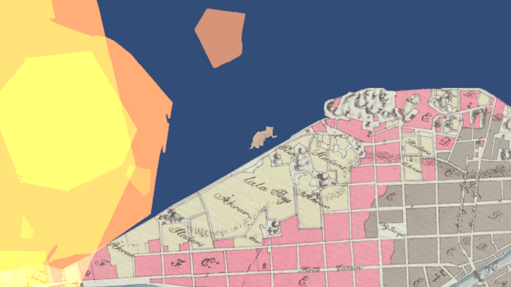
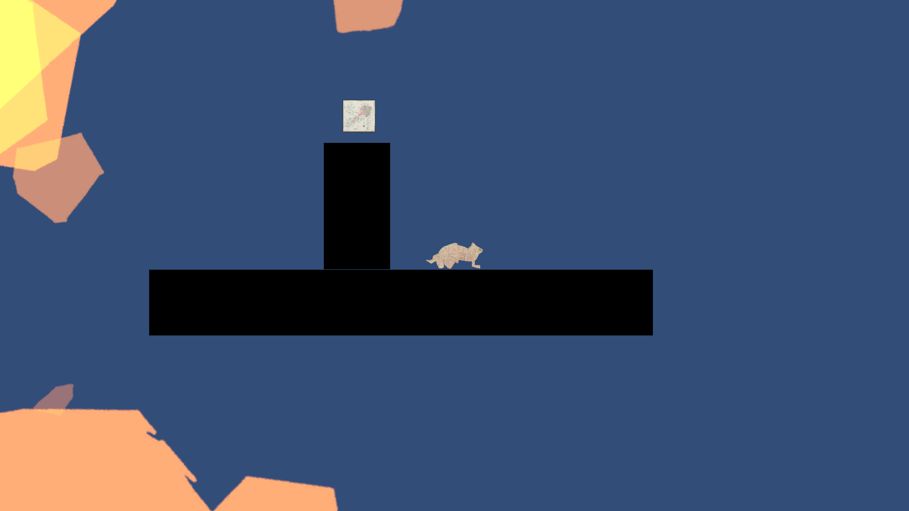
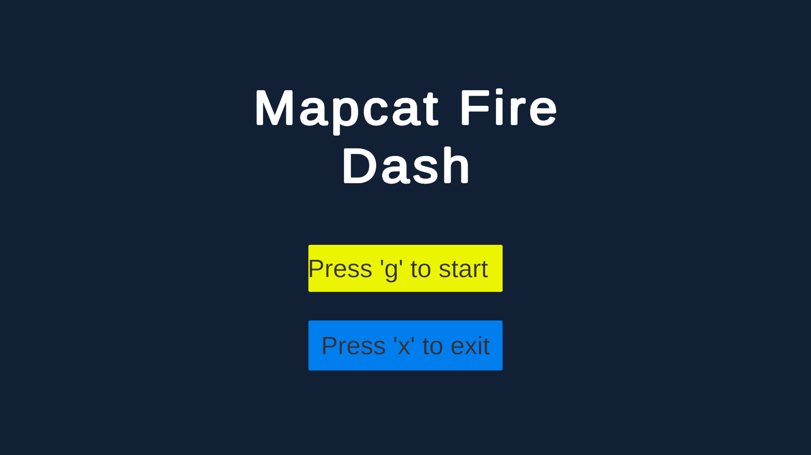

A cat woven from 19th-century parchment, sprinting across the streets of Turku as the Great Fire of 1827 climbs the map behind it.
Cartographia Game Jam was hosted by the National Archives of Finland at their historic building on Rauhankatu, Helsinki — six teams, one weekend, and a shared archive of digitized maps dating back to the 17th century.
The only rule: your game had to connect to a historical map somehow — as inspiration, as an asset, or as a mechanic. Any engine was fair game. I worked in Unity as part of the DAME project team from South-Eastern Finland University of Applied Sciences, alongside R&D specialist Jani Saari.
Instead of treating the archive material as background art, the map became the terrain itself — its streets, plots, and coastline read directly as platforms, gaps, and hazards.
The level geometry is drawn from an 1827 map of Turku's harbour quarter — the same year as Turun palo, the Great Fire of Turku, one of the most destructive urban fires in Finnish history.
You play a cat cut from parchment, running across the map as flame and smoke spread relentlessly behind you. Fall behind, and the fire catches you. Reach the far edge of the map, and you'll find a fire extinguisher waiting — the only way to put the blaze out for good.


There's no fighting the fire, only staying ahead of it. Every platform, gap, and ledge is pulled straight from the archival map's linework, so reading the terrain and reading the historical document become the same act.
Built solo on code under real time pressure — including working through Unity issues on-site — with the National Archives community troubleshooting alongside us.

Start the run
Exit to desktop
Move and jump to stay a step ahead of the flames — the map doesn't stop moving once you start.
"Technical challenges, like the ones we ran into with Unity, added extra tension — but we worked through them together, with a calm attitude and a genuinely helpful community around us."